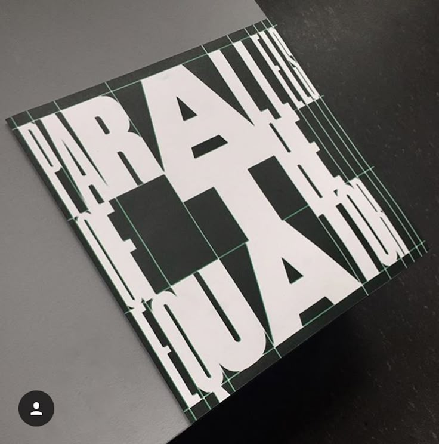

Diese Arbeit ist im Rahmen des Moduls KICKWEB entstanden. Ausgegangen bin ich von der untenstehenden Grafik. Diese stammt vom Grafiker Matthias Deckx und ich habe sie nur auf Pinterest gefunden deshalb kann ich leider keine vernünftige Quelle angeben. Da habe ich mir dann Gedanken dazu gemacht, wie ich dieses grafische Konzept im Web denken könnte. Mehrheitlich habe ich mich mit Hover Effekten und Transitions auseinandergesetzt.
